<header class="main-header">

  <!-- Logo -->
  <a [routerLink]="['admin/face']" class="logo">
      <!-- mini logo for sidebar mini 50x50 pixels -->
      
      <!-- logo for regular state and mobile devices -->
      
  </a>

  <!-- Header Navbar -->
  <nav class="navbar navbar-static-top" role="navigation">
      <!-- Sidebar toggle button-->
      <a  class="sidebar-toggle" data-toggle="push-menu" role="button">
          <span class="sr-only">Toggle navigation</span>
      </a>
      <!-- Navbar Right Menu -->
      <div class="navbar-custom-menu">
          <ul class="nav navbar-nav">
              <!-- User Account Menu -->
              <li class="dropdown user user-menu">
                  <!-- Menu Toggle Button -->
                  <a  class="dropdown-toggle" data-toggle="dropdown">
                      <!-- The user image in the navbar-->
                      
                      <!-- hidden-xs hides the username on small devices so only the image appears. -->
                      <a [routerLink]="['/visitor']" (click)="logOut()"><span class="hidden-xs">Cerrar Sesión</span></a>
                  </a>
              </li>
          </ul>
      </div>
  </nav>
</header>
